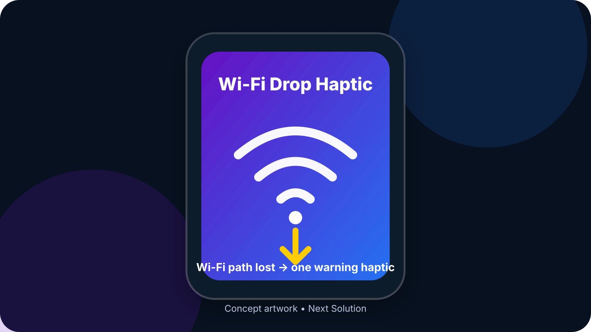
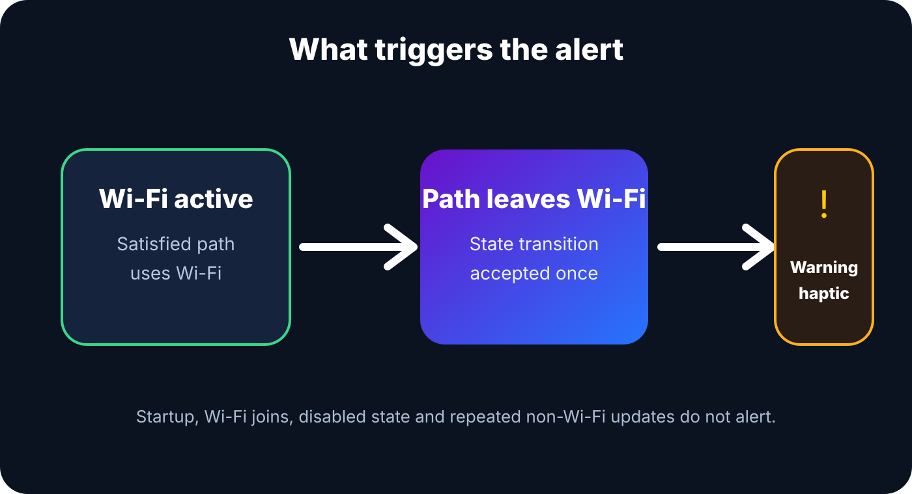

Wi-Fi Drop Haptic 1.0.0
Get one warning haptic when the active iOS network path leaves Wi-Fi. The tweak does not alter Wi-Fi, cellular data, VPN settings, saved networks or credentials.
Jailbreak required. This release is build-validated but still awaiting confirmation on the target physical device. Artwork is conceptual.

One focused feature
Wi-Fi → non-Wi-Fi
A warning haptic fires only after a previously observed usable Wi-Fi path changes to a path that no longer uses Wi-Fi.
No startup false alert
The first network-path callback only establishes state. Joining Wi-Fi and repeated non-Wi-Fi updates do not alert.
Public Network framework
The runtime uses Apple's Network framework path monitor rather than a new private SpringBoard view lifecycle hook.
How it works

Wi-Fi Drop Haptic observes the active network path inside SpringBoard. A satisfied path using Wi-Fi becomes the previous state; when a later path no longer uses Wi-Fi, one warning haptic is generated if the tweak is enabled.
Download Wi-Fi Drop Haptic 1.0.0
Rootless
For standard rootless jailbreak environments. Architecture: iphoneos-arm64.
Install only the package variant matching your jailbreak. Do not install both variants.
Installation
- Add https://nextsolution.cc/ to Sileo.
- Refresh package sources and search for Wi-Fi Drop Haptic.
- Confirm version 1.0.0 and choose the matching RootHide or rootless architecture.
- Install the package and allow the post-install respring.
- Open Settings → Wi-Fi Drop Haptic.
- Keep Enable Wi-Fi Drop Alert turned on.
If SpringBoard enters Safe Mode, open Sileo and remove Wi-Fi Drop Haptic, then respring. The tweak does not modify saved network data.
Recommended physical-device test
- Confirm Settings shows only the enable switch and opens without crashing.
- Connect to a working Wi-Fi network and wait several seconds.
- Turn Wi-Fi off or leave range until iOS leaves the active Wi-Fi path; confirm exactly one warning haptic.
- Remain on cellular/non-Wi-Fi and confirm there are no repeated alerts.
- Reconnect to Wi-Fi; confirm joining Wi-Fi itself produces no haptic.
- Leave Wi-Fi again and confirm one new haptic.
- Disable the tweak in Settings and repeat; confirm no haptic occurs.
Known limitations
The tweak reports the active network path leaving Wi-Fi; it does not identify the exact 802.11 disconnect reason. VPN or unusual multipath configurations can make the Network framework path differ from what the status-bar icon seems to imply. Physical behavior is not claimed verified until tested on the target device.
FAQ
Does this work on stock iOS?
No. It is a jailbreak tweak.
Which package should RootHide users install?
WiFiDropHaptic_1.0.0_RootHide.deb.
Which package should rootless users install?
WiFiDropHaptic_1.0.0_Rootless.deb.
What iOS versions are supported?
The package targets iOS 15 and later, with iOS 16.0 as the primary compatibility target.
Does it read Wi-Fi passwords?
No. It only observes the system network-path classification and does not extract credentials or saved network data.
How do I remove it?
Uninstall Wi-Fi Drop Haptic in Sileo and respring.